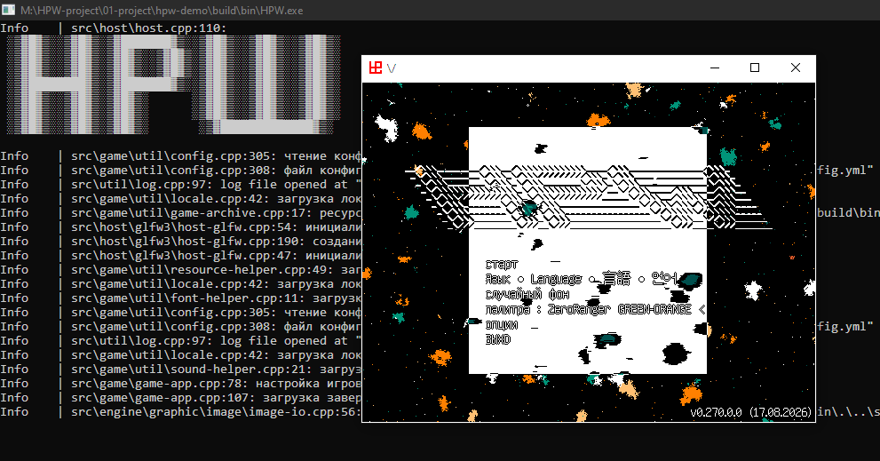

Само пофиксилось
Мучиться не пришлось, обновил либы и кинул ассеты в корень архива - работает. Теперь я наедине со своими жуками, надо чинить палитры с перхотью. Перхоть - вылет за пределы яркости, картинка облезает хлопьями.
Мучиться не пришлось, обновил либы и кинул ассеты в корень архива - работает. Теперь я наедине со своими жуками, надо чинить палитры с перхотью. Перхоть - вылет за пределы яркости, картинка облезает хлопьями.
